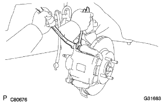
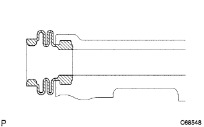

Remove the front brake |
| 1. Remove the front tire |
| 2. Brake fluid removal |
| 3. Disc brake cylinder Assy LH removed |
Remove the front -frenifrexable hose union bolt and flexible hose gasket, and separate the front -front frame -brake cylinder Assy LH.
|  |
Fix the front disc brake cylinder slide pin with a spanner to remove the two bolts, remove the front disc brake cylinder ASSY LH.
| 4. Remove the front day square brake pats dust (patsudo only) |
Remove the two front desk brake brake pats.
Anti -Square Sim No.1 and Anti -Square Sim No.Remove 2 from two Dicek brake pads.
| 5. Front disc brake pad support plate No.1 |
| 6. Front disc brake pad support plate No.2 |
| 7. Front disc brake cylinder slide pin removed |
Pull out two front disc brake cylinder slide pins from the front disc brake cylinder mounting LH and remove it.
| 8. Remove the front disk brake bush dust boots |
|  |
Remove the front disc brake cylinder mounting LH and remove two front disc brake bush dust boots.
| 9. Front disc brake cylinder mounting LH removed |
Remove the two bolts and remove the front disc brake cylinder mounting LH.